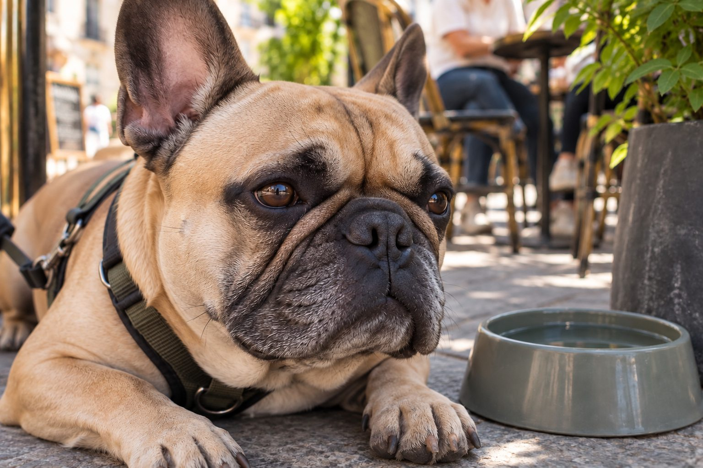

A dry nose can happen after sleep, warm air, or time in the sun. Persistent cracking or other signs of illness deserve veterinary advice.
The old idea that a healthy dog must always have a cold, wet nose is too simple. Moisture changes during the day. What matters is whether your dog is otherwise acting normally and whether the nose shows irritation or damage.
Ordinary reasons for dryness
A dog may wake with a dry nose after sleeping, especially near heating or air conditioning. Warm weather, sun, and reduced licking can also change surface moisture. If the nose returns to normal and your dog feels well, simple observation may be enough.
Offer fresh water and a comfortable place out of harsh sun. Do not judge hydration from the nose alone; appetite, energy, gums, and drinking habits provide more context.
A dog's nose changes throughout the day. Sleep, indoor heating, recent time outdoors, and ordinary licking can all affect how it feels when you touch it. A dry surface by itself is a poor general health test. Instead, look at the dog as a whole: energy, appetite, breathing, drinking, and comfort. Check again after the dog has been awake and settled. A temporary dry nose on a bright, active dog is different from dryness paired with lethargy or repeated vomiting.
Inspect the surface in good light. Is it merely less moist, or are there cracks, bleeding, sores, unusual discharge, thick crust, or a new change in color? Note whether the dog rubs the nose or resists touch. Those details are worth describing to a veterinarian. Avoid trying to infer fever from the feel of the nose; a clinician can assess temperature and other signs properly.
Changes worth noticing
Crusting, deep cracks, bleeding, discharge, sores, or a change in color or texture can signal irritation or another problem. Watch for sneezing, feverish behavior, low energy, or reduced appetite. Several conditions can affect the nose, and appearance alone cannot identify which one is present.
Take a photo in consistent light if a patch changes over time. Your veterinarian can examine the area and advise whether testing or treatment is needed.
The surrounding environment can offer clues without providing a diagnosis. Dry air may affect a nose after a night near heating, while sun and wind can irritate exposed skin. An older dog's nose may look different from a younger dog's, but age is not a reason to ignore new damage. If the surface remains rough, cracks, or seems painful, seek veterinary guidance. The clinician may ask about duration, outdoor exposure, medications, and whether other skin areas have changed.
Compare photographs taken in similar light over several days if the change is mild. This can show whether a spot is spreading or healing. Do not wait for the entire nose to look abnormal before calling about an area that bleeds or ulcerates. A localized lesion may need care even when the dog otherwise eats and plays normally.

What not to put on the nose
Avoid human creams, sunscreen, essential oils, or home remedies unless your veterinarian recommends a product safe for dogs. Dogs lick their noses, so ingredients can be swallowed. Scrubbing flakes can make sensitive skin worse.
If the nose is sore or cracked, ask a veterinarian about a suitable protective product and the underlying reason for the change.
Resist applying a human lip balm, sunscreen, essential oil, or antibiotic ointment without checking with a veterinarian. Dogs lick their noses, so ingredients intended for human skin may be swallowed. A product can also hide the appearance of a lesion before an exam. Provide normal access to water and a comfortable resting place while you observe. If the dog has obvious pain, bleeding, or a persistent sore, ask the clinic what is safe to do before the visit.
Do not over-clean a dry nose. Repeated rubbing may worsen irritation. If there is a little ordinary dirt, use a soft damp cloth and stop if the dog resists. Focus on whether the dog is comfortable and whether the surface is changing. A dry nose is an observation, not a condition that always needs a cosmetic fix.
Look beyond nose moisture
| Observation | Next step |
|---|---|
| Brief dryness after sleep, otherwise normal | Recheck later and watch the whole dog. |
| Persistent crust, crack, bleeding, or pain | Arrange a veterinary examination. |
| Dryness with weakness, vomiting, or breathing trouble | Seek prompt or urgent advice for the broader illness signs. |
A wet nose does not prove health, and a dry nose alone does not prove illness.
When to seek help
Arrange a visit if dryness persists with visible damage or if your dog seems unwell. Seek urgent advice for breathing difficulty, major bleeding, or a sudden severe change. A dry nose by itself is not a diagnosis.
Call sooner when dryness accompanies systemic signs such as reduced energy, poor appetite, vomiting, unusual breathing, or signs of dehydration. Seek urgent advice if the dog is collapsed, having trouble breathing, or severely unwell. If the only concern is a persistent cracked or crusted surface, arrange an examination rather than trying a sequence of home products. Describe when it started and whether the area has spread or become painful.
The veterinarian may need to look closely at the nose and consider skin and general health together. Share any recent travel, sun exposure, new products, or changes elsewhere on the body. Bring photos if the surface varies by day. Clear observations help more than the old rule that a wet nose means a healthy dog.
Practical details
Normal changes through the day
A dog may wake from a long nap with a dry nose because it has not licked it for a while. Wind, sun, indoor heating, and air conditioning can also change surface moisture. If the nose later looks comfortable and the dog eats, plays, and breathes normally, a brief dry spell may need only observation. One snapshot of the nose is a poor measure of body temperature or overall health.
Watch the dog, not just the nose. Is the dog alert, moving normally, and interested in food? Has drinking changed? Does the nose have cracks, bleeding, or a persistent thick crust? These details help distinguish a temporary surface change from a local problem that a veterinarian should examine.
Four nose-health assumptions to reconsider
- Myth: a dry nose always means fever
- Moisture varies with sleep and weather; overall behavior and a veterinary assessment matter more.
- Myth: a wet nose proves health
- A dog can be ill while the nose remains moist, so do not use it as a health certificate.
- Myth: every dry nose needs balm
- Products can be swallowed; ask a veterinarian about persistent cracks or sores first.
- Myth: only the nose matters
- Appetite, energy, breathing, and the presence of discharge offer more useful context.
When the surface itself deserves attention
A constantly dry area with deep fissures, sores, altered color, bleeding, or discharge needs a closer look. A veterinarian can consider sun exposure, irritation, infection, immune-related problems, and other possibilities. Do not pick at crusts; that can cause pain and make the area harder to assess. A clear photograph in the same light each day can show whether a patch is changing.
Avoid guessing a diagnosis from an image search. Several nose conditions can look similar to a pet owner. If your dog also seems weak, has trouble breathing, or is not eating, seek advice promptly. The combination of signs determines urgency more than the surface moisture alone.
For example, one dog wakes with a dry nose after sleeping near a radiator, then behaves normally and the surface soon looks usual. Another develops a persistent crust at one edge that bleeds after rubbing. These observations should lead to different responses. The first can be monitored if no other signs appear; the second deserves a veterinary appointment. A third dog has a dry nose plus weakness and vomiting, which requires more urgent attention because the whole animal is affected.
Use these examples to judge change from normal rather than a single touch. Ask another caregiver whether they have seen the same pattern, and note dates. Avoid comparing your dog with another breed or an online photo. Individual noses vary, and the associated signs matter.
Care without overdoing it
Keep fresh water available and provide shade on sunny days. If the veterinarian recommends a protective product, use only the one and amount advised. Human moisturizers, sunscreens, and essential oils may contain ingredients a dog should not lick. Do not rely on a balm to cover a crack that continues to worsen.
Bring a timeline to the appointment: when the dryness began, whether it changes through the day, recent weather or grooming products, and any change in appetite or energy. This makes the consultation more useful. A dry nose can be a small observation worth noting, but it is not a stand-alone medical test.
A sensible routine is to notice the nose during ordinary interaction, not check it obsessively every hour. If a change persists, photograph it and make a short note about appetite, activity, and the appearance of the skin. That record supports a useful conversation with the clinic. If a veterinarian recommends a specific product or monitoring plan, follow those instructions and ask when to report lack of improvement. Do not assume that a little surface moisture means the issue is resolved.
The key distinction is between a normal fluctuation and a persistent or painful change. A healthy dog can have a dry nose, and an ill dog can have a wet one. Looking beyond nose moisture protects you from both unnecessary worry and false reassurance. If the dog seems unwell, act on the broader signs.
A close look is more informative than a quick touch. Examine whether the skin is intact and whether both sides look similar. Note any repeated rubbing, crust that returns after cleaning, or discharge from the nostrils. If you take a photograph, use daylight and avoid filters so the veterinarian can compare color and texture over time. Do not peel off crust or scrub a sore area. Pain, bleeding, or a persistent lesion should be assessed rather than covered with an ointment chosen from a human medicine cabinet.
When you call, describe the dog's general behavior as well as the nose. A normal appetite and energy level may help the team judge timing, but they do not make a painful lesion irrelevant. Conversely, weakness or vomiting with a dry nose is a broader health concern and needs prompt advice. Moisture alone is a poor yes-or-no test. Paying attention to comfort, skin changes, and associated symptoms gives a safer basis for action.
Check the whole dog, not one nose touch
A dry nose after sleep or time in a warm room can be a temporary observation. Look again after your dog has been awake and drinking normally. Pay attention to energy, appetite, breathing, and the appearance of the nose itself. Cracks, bleeding, discharge, sores, or a painful surface matter more than a brief change in moisture alone.
If the dog has been outdoors, consider weather and sun exposure, but do not apply a random human lotion or essential oil. A product safe for people may be inappropriate for a dog that licks its nose. Ask your veterinarian which care is suitable if the surface remains irritated. Persistent dryness plus lethargy, vomiting, or poor appetite warrants a broader assessment.
When you call the clinic, describe when you first noticed the change and whether the nose looks different in color or texture. A photo in natural light can help you compare progress. Avoid using nose moisture as a stand-alone test for fever or general health; behavior and other signs provide better context.
If the surface repeatedly cracks or develops crusts, photograph it before cleaning or applying anything. Include whether the same change appears on the paw pads or elsewhere on the skin. Those details can help your veterinarian decide what to examine next.
Continue exploring
For a broader routine, read Why Does My Dog Scratch Even When He Doesn't Have Fleas?, Why Is My Dog Shaking? Common Reasons Explained, and What Does Bad Breath in Dogs and Cats Mean?.
Frequently Asked Questions
Does a dry nose mean my dog has a fever?
No. Nose moisture is not a reliable way to judge body temperature.
Can sleep make a dog's nose dry?
Yes, dryness after sleep can be temporary.
Should I use petroleum jelly?
Ask your veterinarian before applying products, especially if the skin is cracked or painful.
Editorial references
These resources informed the general guidance in this article. They do not replace advice tailored to your pet.
This guide offers general information. Your pet’s age, health, and history may call for a different plan. For medical concerns, ask your veterinarian.